Cân bằng, so khớp và truy vấn ảnh bằng histogram.
Trường ĐH Công nghệ – Đại học Quốc gia Hà Nội
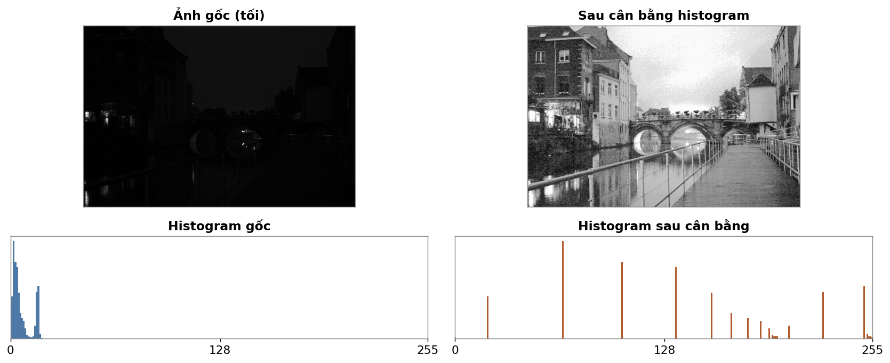
Ảnh chụp thiếu sáng gần như đen (trái). Không thêm dữ liệu mới — chỉ trải lại các mức xám đang dồn cục — chi tiết cầu, nhà, mặt nước hiện ra (phải).
Sau buổi học, sinh viên có thể:
Ảnh số và phép toán mức điểm.
Nền tảng cho histogram.
Mỗi điểm ảnh là một con số mức xám. Cả buổi hôm nay ta làm việc với phân bố của các con số đó.
Đếm số điểm ảnh theo mức xám.
Đơn giản nhưng nói nhiều điều.
Nếu chỉ nhìn histogram (không nhìn ảnh), ta đoán được gì về tấm ảnh?
Bins: các ô chia trục mức xám (thường 256 ô). Vì \(\sum_k n_k = MN\) nên \(\sum_k p(r_k) = 1\).
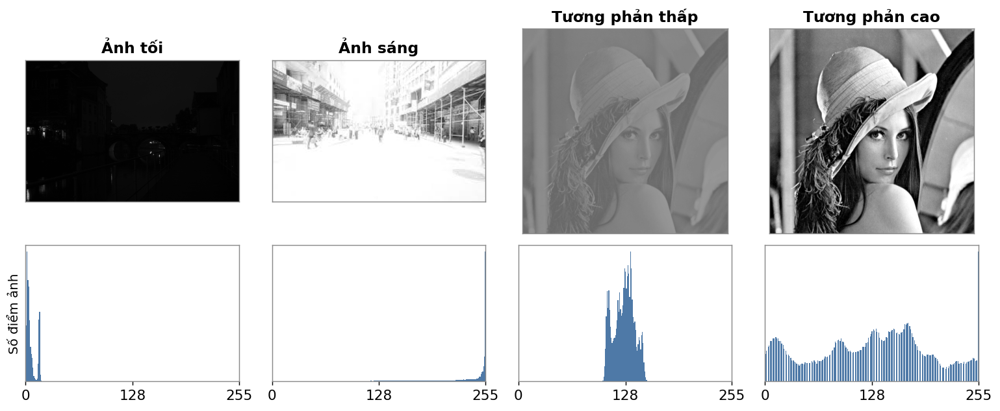
Khối histogram dồn về trái → ảnh tối, dồn về phải → ảnh sáng, hẹp giữa → tương phản thấp, trải rộng → tương phản cao.
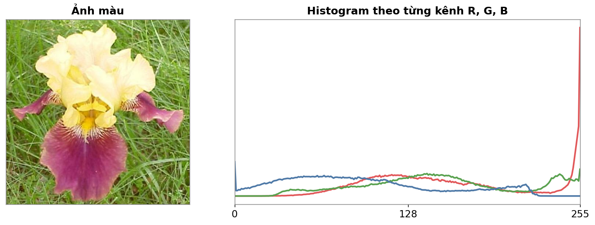
Ảnh màu tách thành histogram cho từng kênh R, G, B. Ba đường cho biết ảnh nghiêng về màu nào — ở đây kênh xanh lá và đỏ trội hơn.
Histogram equalization.
Kéo giãn tương phản một cách tự động.
Gán lại mức xám sao cho ảnh dùng gần đều toàn dải giá trị — histogram phẳng nhất có thể.
Kết quả: cải thiện dải động (dynamic range) và tương phản của ảnh.
Gán lại mức xám phải giữ thứ hạng cường độ: nếu \(r_{k_2} > r_{k_1}\) thì \(s_{k_2} \ge s_{k_1}\) — tức \(T(r)\) đơn điệu tăng.
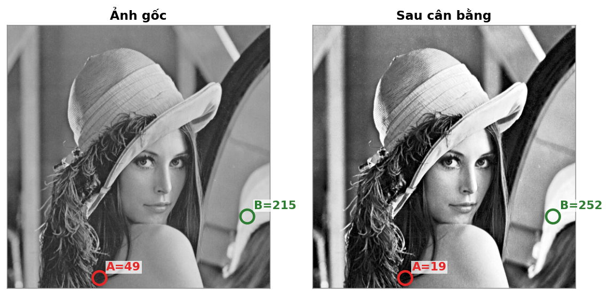
Điểm tối A vẫn tối hơn điểm sáng B sau cân bằng — thứ hạng không đảo.
Mỗi mức gốc \(r_k\) ánh xạ tới một mức mới \(s_k = T(r_k)\), lưu trong bảng tra:
| \(r_k\) | 0 | 1 | 2 | … | L−1 |
| \(s_k\) | \(s_0\) | \(s_1\) | \(s_2\) | … | L−1 |
Hàm \(T(r)\) đơn điệu tăng ⇒ nhiều mức gốc có thể gộp về một mức mới, nhưng không bao giờ tách một mức gốc thành hai.
\(T(r)\) không giảm.
Đặt hàm biến đổi \(T(r)\) tỉ lệ với CDF của ảnh gốc — CDF là histogram cộng dồn, luôn không giảm.
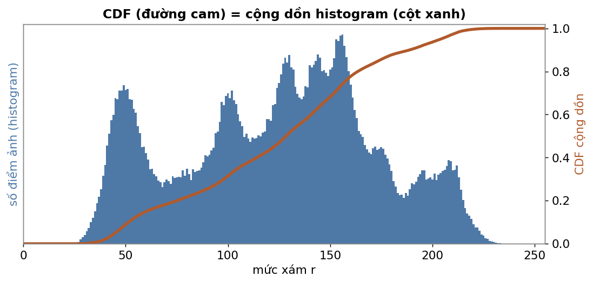
Điều kiện: số điểm có mức \(\le r_k\) bằng số điểm trải đều tới mức mới \(s_k\):
\(N\) = tổng số điểm ảnh, \(L\) = số mức xám. Giải ra \(s_k\) ở slide sau.
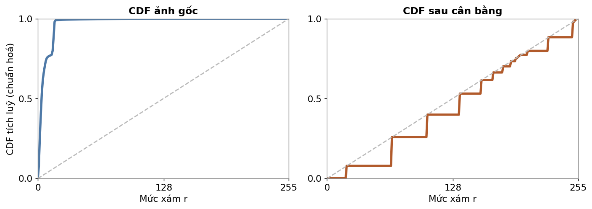
Hàng trên là histogram, hàng dưới là CDF tương ứng. Histogram dồn cục ⇒ CDF cong; sau cân bằng histogram trải đều ⇒ CDF gần thẳng, bám đường chéo.
Giải \(s_k\) từ đẳng thức trên — hai cách viết tương đương:
Trong đó \(C_R(k)\) là histogram tích luỹ tại mức \(r_k\). Trên thực tế, cài đặt thường dùng dạng chuẩn hoá \(s_k = (L-1)\cdot \mathrm{CDF}(r_k)\) rồi làm tròn.
Cân bằng histogram "hoàn hảo" chỉ đúng với biến liên tục. Với ảnh số, kết quả là histogram trải rộng và tương đối đều, kèm vài đỉnh cao.
Chỉ một lần quét ảnh để dựng histogram, một lần quét nữa để tra bảng — rất nhanh.
Bước 1: đếm histogram, rồi cộng dồn thành CDF. Ảnh 64×64 nên \(MN = 4096\) điểm ảnh.
| \(r_k\) | 0 | 1 | 2 | 3 | 4 | 5 | 6 | 7 |
|---|---|---|---|---|---|---|---|---|
| \(n_k\) — số điểm | 790 | 1023 | 850 | 656 | 329 | 245 | 122 | 81 |
| \(p(r_k)=n_k/MN\) | 0.19 | 0.25 | 0.21 | 0.16 | 0.08 | 0.06 | 0.03 | 0.02 |
| CDF — cộng dồn | 0.19 | 0.44 | 0.65 | 0.81 | 0.89 | 0.95 | 0.98 | 1.00 |
CDF cộng dồn \(p(r_k)\) từ trái sang phải; ô cuối luôn bằng 1.
Bước 2: lập bảng tra \(s_k = \operatorname{round}\big((L-1)\cdot\text{CDF}\big) = \operatorname{round}(7\cdot\text{CDF})\).
| \(r_k\) | 0 | 1 | 2 | 3 | 4 | 5 | 6 | 7 |
|---|---|---|---|---|---|---|---|---|
| CDF | 0.19 | 0.44 | 0.65 | 0.81 | 0.89 | 0.95 | 0.98 | 1.00 |
| \(7\cdot\text{CDF}\) | 1.33 | 3.08 | 4.55 | 5.67 | 6.23 | 6.65 | 6.86 | 7.00 |
| \(s_k\) — làm tròn | 1 | 3 | 5 | 6 | 6 | 7 | 7 | 7 |
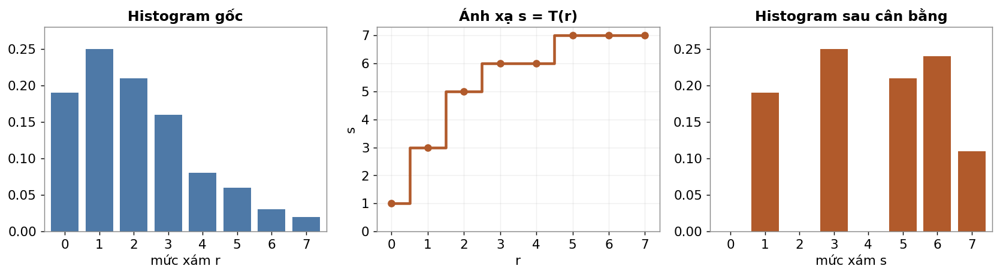
8 mức gốc dồn về 5 mức {1, 3, 5, 6, 7} (có khoảng trống). Histogram trải rộng hơn ⇒ tương phản tăng — đúng ba bước ở slide trước, làm trên số cụ thể.
Histogram gốc dồn sát 0. Sau cân bằng, các mức được kéo ra khắp dải — chi tiết trong bóng tối hiện rõ.
Toàn bộ thuật toán gói trong CDF + một bảng tra:
import numpy as np
def compute_sk(img, L=256):
hist = np.bincount(img.ravel(), minlength=L) # 1) histogram
cdf = np.cumsum(hist) / img.size # 2) CDF chuẩn hoá [0,1]
s_k = np.round((L - 1) * cdf).astype("uint8") # 3) bảng tra r -> s
return s_k
def hist_equalize(img):
s_k = compute_sk(img) # LUT dài 256
return s_k[img] # tra bảng cho mọi điểm ảnhTrong OpenCV: cv2.equalizeHist(img) làm đúng việc này.
Toàn cục làm mất chi tiết vùng nhỏ.
Cục bộ và CLAHE khắc phục.
Cùng ý tưởng cân bằng, khác ở phạm vi tính histogram: cả ảnh hay từng vùng.
CLAHE — Contrast Limited Adaptive Histogram Equalization (cân bằng thích nghi có giới hạn tương phản):
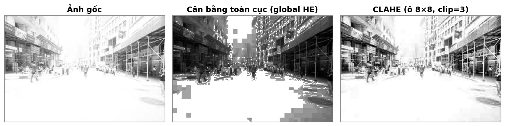
Ảnh sáng gắt (trái). Cân bằng toàn cục khuếch đại quá mức, sinh khối và nhiễu (giữa). CLAHE giữ tương phản cục bộ mà vẫn tự nhiên (phải).
Histogram matching (specification).
Áp phân bố của ảnh này lên ảnh kia.
Ép về một histogram đều cố định. Không chọn được "đích".
Ép về một histogram bất kỳ do ta chỉ định — thường lấy từ một ảnh mẫu (template).
Cân bằng là trường hợp riêng của so khớp, khi histogram đích là phân bố đều.
Cân bằng cả nguồn và mẫu về cùng mức đều \(s\), rồi đi ngược từ mẫu:
Với mỗi mức đều \(s\), tra ngược sang mức xám mẫu có cùng CDF: \(z = G^{-1}(s)\).
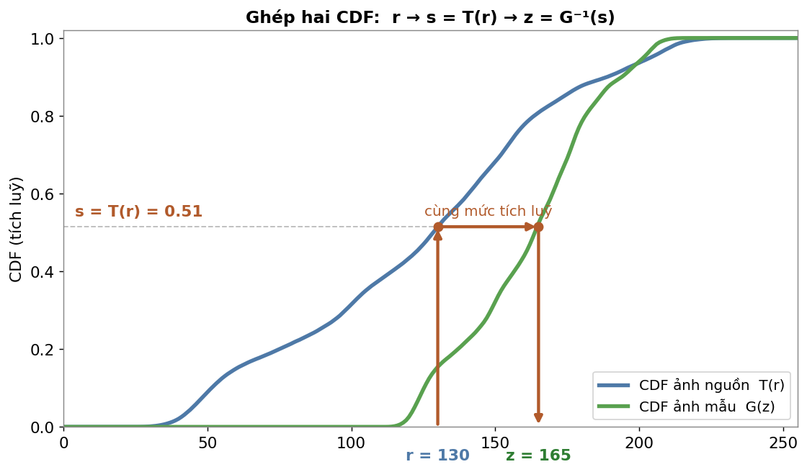
Chọn mức \(r\) → lên CDF nguồn được \(s = T(r)\) → gióng ngang sang CDF mẫu ở cùng mức tích luỹ → xuống được \(z = G^{-1}(s)\). Ở đây \(r = 130 \to z = 165\) (kéo sáng theo mẫu).
Bản chất là ghép hai CDF: với mỗi giá trị CDF nguồn, tra ngược sang mức xám của mẫu có cùng CDF.
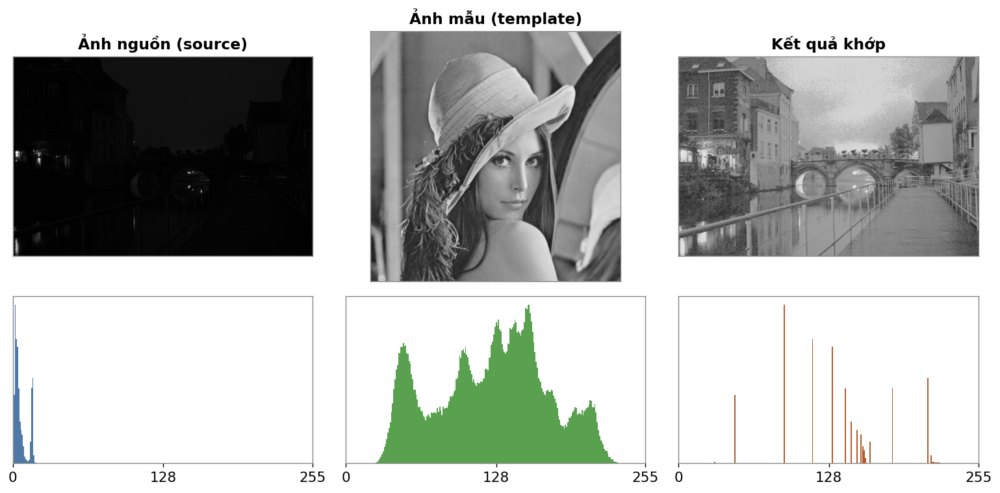
Ảnh nguồn tối được kéo về phân bố mức xám giống ảnh mẫu — histogram kết quả bám theo dáng của mẫu, không phải phẳng như khi cân bằng.
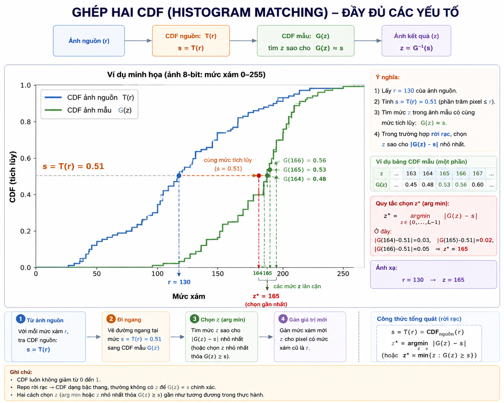
Histogram làm đặc trưng.
Tìm ảnh giống nhất trong tập dữ liệu.
Biến mỗi ảnh thành một vector số (đặc trưng), rồi so sánh khoảng cách giữa các vector.
def calc_hist(img, bins=20): # img: (H, W, 3)
h = [np.histogram(img[:,:,c], bins=bins, range=(0,256))[0]
for c in range(3)] # histogram từng kênh
v = np.array(h).ravel()
return v / (img.shape[0] * img.shape[1]) # chuẩn hoá
feats = [calc_hist(im) for im in dataset] # đặc trưng cả tập
q = calc_hist(query) # đặc trưng ảnh truy vấn
dists = [np.linalg.norm(q - f) for f in feats] # khoảng cách Euclid
rank = np.argsort(dists) # xếp hạng tăng dần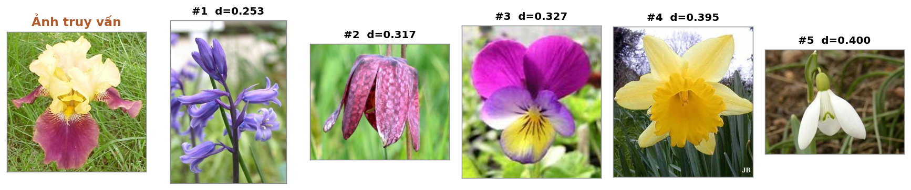
Xếp hạng theo khoảng cách histogram. Các ảnh có bảng màu gần giống (nhiều xanh lá + tím) đứng đầu — dù loài hoa khác nhau.
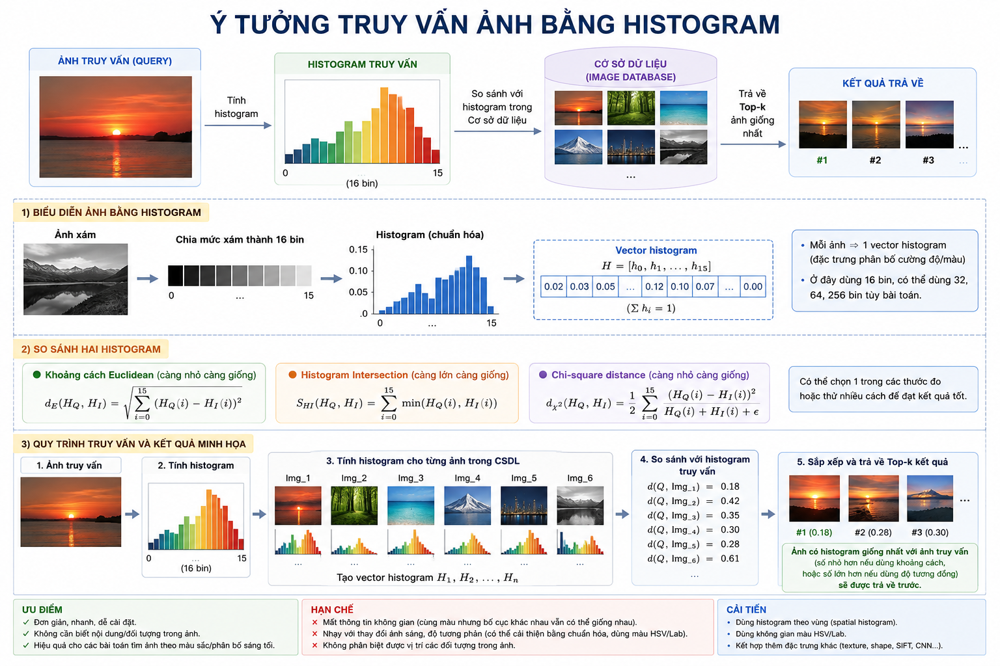
Quay lại ảnh mở đầu: chi tiết hiện ra không nhờ thêm dữ liệu, mà nhờ sắp xếp lại phân bố mức xám.